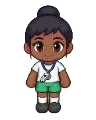

Wiki › Items › Drinks and potions › Stamina Bottle Supreme

Stamina Bottle Supreme
Drink / potion Level 200 Rare
Restores 60% of your stamina (now: 6,000; never less than 6,000). Size 6 of 7: the bigger it is, the more it restores.
- Type
- Drink / potion
- Level
- 200
- Rarity
- Rare
- Effect
- Restores 6,000 stamina
- Shop price
- 🪙 2,600
- Shop pays
- 🪙 520
Where it comes from
Dropped by (16)
Where to buy
- Seu Coral, the merchant — Atlantis — Sunken City 🪙 2,600
- Masseur Bené — Campinho Village 🪙 2,600

Masseuse Dora — Footvolley Beach 🪙 2,600- Masseur Juca — City — Futsal Courts 🪙 2,600
 Masseuse Lúcia — Youth Training Center 🪙 2,600
Masseuse Lúcia — Youth Training Center 🪙 2,600 Masseur Tonho — Legendary Stadium 🪙 2,600
Masseur Tonho — Legendary Stadium 🪙 2,600 Masseur Samir — Cairo — On the Banks of the Nile 🪙 2,600
Masseur Samir — Cairo — On the Banks of the Nile 🪙 2,600- Masseuse Aiko — Tokyo — Neon District 🪙 2,600
- Masseuse Nadia — Doha — City of Dunes 🪙 2,600
- Masseur Joe — Miami — Ocean Drive 🪙 2,600
- Masseuse Inês — Lisbon — Bairro Alto 🪙 2,600
- Masseur Paco — Madrid — Plaza and Barrio 🪙 2,600
- Masseuse Giulia — Milan — Piazza and Curva 🪙 2,600
 Masseur Hans — Munich — Clock Square 🪙 2,600
Masseur Hans — Munich — Clock Square 🪙 2,600 Masseuse Olivia — London — Camden and East End 🪙 2,600
Masseuse Olivia — London — Camden and East End 🪙 2,600- Masseuse Amélie — Paris — On the Banks of the Seine 🪙 2,600
- Masseur Tito — Buenos Aires — La Boca 🪙 2,600
- Masseuse Dalva — Rio de Janeiro — Copacabana 🪙 2,600
- Masseur Zeca — Santos — Waterfront and Vila Belmiro 🪙 2,600
Quest reward
- Welcome to Atlantis (Level 196)
- 🌊 The statue in the square (Level 206)
- 🌊 The map of the currents (Level 280)